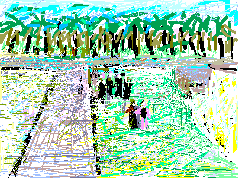

My great anticipation is realized. The hurdle of the Israeli border is past. I am in Palestine. Our path is right through Beisan. Ah! Beisan. I search the sights for the reflections my heart. The Hebrew sign names it as 'Bet Sheim.' to make it antiseptic for its strictly Israeli residents, the Palestinian villagers have been forcibly evicted to a life of want in refugee camps across the border. Some of the new occupants have skimpy dress and bare bellies but many women wear long black skirts and some have white shawls. Are they trying to look earthy in imitation of the Palestinian peasants whom they replace? Is this a purchase of absolution? I visualize them struggling through the thickness of their guilt.
The bus continues. My eyes are wide open doorways. The land is beautiful. I like nothing they did to it but I can see so easily how well they have irrigated it with US tax dollars. Some of them are my own. Ah the contradictory treacheries of privilege and advanced capitalism. I look with chagrin at those poor palm trees which populated my childhood drawings. I do not like how they trim them. They used to possess such gracious gestures.
Copyright, Samia A. Halaby, 1998, All rights reserved. To request permission to reproduce any part of these pages click above.
Select from the following menu representing the entire studio:
Chapter I ... Grandmother, ... Chapter II ... Beisan, ... Chapter III ... Jerusalem, ... Chapter IV ... Sabah, ... Chapter V ... Yafa, ... Chapter VI ... Khader, ... Chapter VII ... Vera, ... Chapter VIII ... Students, ... Chapter IX ... Taxi, ... Chapter X ... Doctor, ... Chapter XI ... Hasan, ...
![[Art on the Net]](/images/artnet_button.gif)
![[Gallery]](/images/gallery_button.gif)
![[Studios]](/images/studios_button.gif)
![[What's New]](/images/whats_new_button.gif)